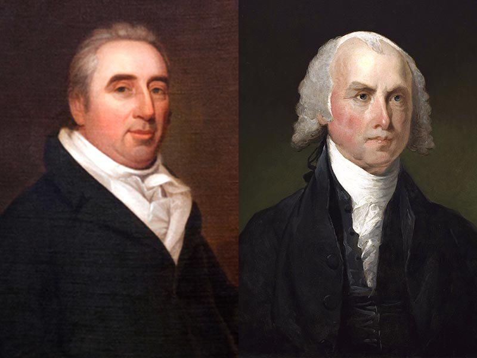
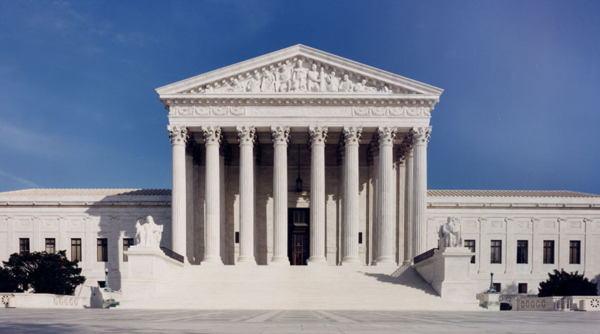

What is Marbury v. Madison?
Marbury vs. Madison was the first U.S. Supreme Court case to apply the principle of judicial review. In 1803, Chief Justice John Marshall wrote the process of judicial review and made the Supreme Court a separate branch of government similar to Congress and the executive branch. James Madison then established judicial review and made it powerful in court systems.
What is Judicial Review and what does it do?
Judicial review is the ability of the court to declare a Legislative or Executive act unconstitutional, or the power of federal courts to void acts of Congress in conflict with the constitution. It was an addition to the system of checks and balances in the government branches so that no one branch became too powerful. With judicial review, if either the executive or legislative branch of government is hesitant about the legitimacy of acts being passed, they send it through judicial review to make sure it is constitutionally legitimate and will not create power strikes between branches.

How Marbury v. Madison came to be:
In the last months of President John Adam's presidential term, when Chief Justice Oliver Ellsworth resigned, Adams sought to reappoint former Chief Justice John Jay to the Court but Jay declined. Following John Jays decline, John Adams nominated John Marshall. John Marshall accepted the position and became the fourth Chief Justice of the United States on February 4, 1801.
In Adams' last few weeks of administration, before Thomas Jefferson took his place, Congress authorized the appointment of 42 justices of the peace in the District of Columbia and Alexandria, Va. John Adams made the appointments to those justices and they were confirmed by the Senate on March 3, the day before Thomas Jefferson took office. The appointments were to be delivered by the Secretary of States office, however, not all of the commissions were delivered by the deadline.
William Marbury happened to be one of those 42 justices of the peace appointed by John Adams who failed to receive his commission on time. He collected a lawsuit against James Madison for failing to deliver his commission. Marbury went to the Supreme Court and filed an original action seeking a writ of mandamus (an order from a court ordering the government official to properly satisfy their official duties and/or correct an abuse of discretion) to compel Madison to deliver the commission. Marbury forced that the Supreme Court was the proper jurisdiction to start this action under Section 13 of the Judiciary Act of 1789. It was this section of the Judiciary Act, the Supreme Court declared unconstitutional because of its conflict with Article 3 of the U.S. Constitution. Article three states that Judges, both of the supreme and inferior Courts, shall hold their Offices during good behavior, and shall, at stated times, receive for their services, compensation, which shall not be diminished during the continuance in office.
Thomas Jefferson then believed that a court could not order him to have the commissions delivered and Secretary of State John Madison refused to appear before the Supreme Court. The Supreme Court then ordered Thomas Jefferson to show a reason why John Adams could not comply with the writ of mandamus.
In Marbury v Madison, the Supreme Court, in early 1803, asserted its power to review the constitutionality of Executive and Legislative actions, creating the judicial review. At the same time, the court limited the power of said branches. The Supreme Court came to the conclusion that it would be unconstitutional for it to issue a writ of mandamus as an original action because doing so violates section 3 of the constitution.
Why was Marbury v. Madison so significant?
The Marbury v. Madison Supreme Court case was extremely important in starting the widely known process of judicial review. Without the supreme court case of Marbury v. Madison, many supreme court cases today may not undergo this process, creating fewer fair trials and possibly overthrown branches.
|